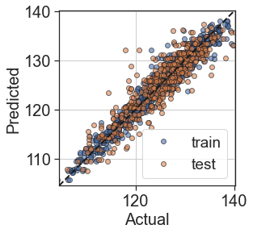
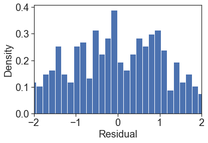
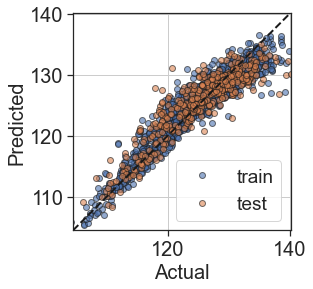
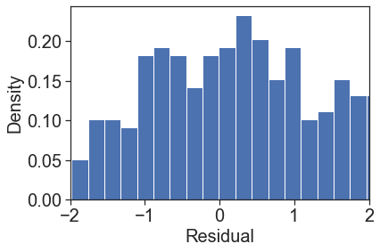
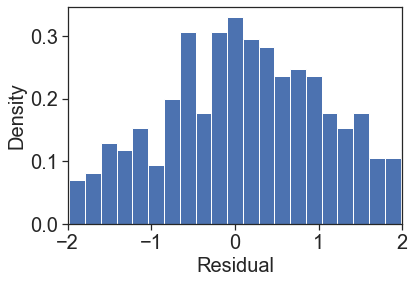
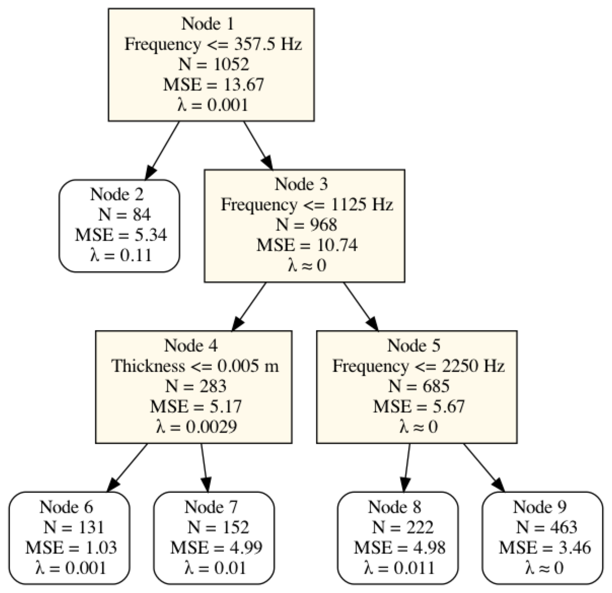
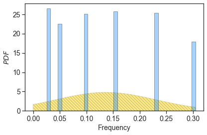
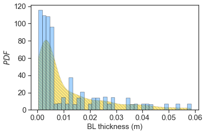

In [1]:
# Making the imports
import numpy as np
import pandas as pd
from copy import deepcopy
import matplotlib.pyplot as plt
from equadratures import *
from sklearn.model_selection import train_test_split
from equadratures.datasets import score
import cv2
In [53]:
SMALL_SIZE = 15#20
MEDIUM_SIZE = 15#20
plt.rc('font', size=SMALL_SIZE) # controls default text sizes
plt.rc('axes', titlesize=SMALL_SIZE) # fontsize of the axes title
plt.rc('axes', labelsize=MEDIUM_SIZE) # fontsize of the x and y labels
plt.rc('xtick', labelsize=SMALL_SIZE) # fontsize of the tick labels
plt.rc('ytick', labelsize=SMALL_SIZE) # fontsize of the tick labels
plt.rc('legend', fontsize=SMALL_SIZE-1) # legend fontsize
In [1]:
random_state=10
data = pd.read_csv('http://archive.ics.uci.edu/ml/machine-learning-databases/00291/airfoil_self_noise.dat',delimiter='\t',
names=['Frequency','AoA','Chord','Velocity','Thickness','spl'])
y = data.spl.to_numpy()
X = data.drop('spl',axis = 1).to_numpy()
X_train, X_test, y_train, y_test = train_test_split(X, y, train_size=0.7, random_state=random_state)
---------------------------------------------------------------------------
NameError Traceback (most recent call last)
<ipython-input-1-6e2990a4b53e> in <module>
1 random_state=10
2
----> 3 data = pd.read_csv('https://archive.ics.uci.edu/ml/machine-learning-databases/00291/airfoil_self_noise.dat',delimiter='\t',
4 names=['Frequency','AoA','Chord','Velocity','Thickness','spl'])
5 y = data.spl.to_numpy()
NameError: name 'pd' is not defined
In [4]:
# Define a helper scorer/plotting function
def test_model(model,X_train,y_train,X_test,y_test,skip=1):
ypred_train = model.predict(X_train)
ypred_test = model.predict(X_test)
fig, ax = plt.subplots()
ax.plot(y_train,ypred_train,'o',alpha=0.6,mec='k',label='train',markevery=skip)
ax.plot(y_test,ypred_test,'o',alpha=0.6,mec='k',label='test',markevery=skip)
ax.plot([np.min(y_test),np.max(y_test)],[np.min(y_test),np.max(y_test)],
'k--',zorder=10,lw=2)
ax.set_aspect(1)
ax.set_xlabel('Actual')
ax.set_ylabel('Predicted')
ax.set_xlim([np.min(y_test),np.max(y_test)])
ax.set_ylim([np.min(y_test),np.max(y_test)])
ax.grid('on')
plt.legend()
fig2, ax2 = plt.subplots()
res = y_test.reshape(-1) - ypred_test.reshape(-1)
ax2.hist(res,bins=100,density=True)
ax2.set_xlabel('Residual')
ax2.set_ylabel('Density')
ax2.set_xlim([-2,2])
plt.show()
print('Training MAE = %.2f' %(score(y_train,ypred_train,'mae')))
print('Test MAE = %.2f' %(score(y_test,ypred_test,'mae')))
print('Training MSE = %.2f' %(score(y_train,ypred_train,'rmse')**2))
print('Test MSE = %.2f' %(score(y_test,ypred_test,'rmse')**2))
print('Training R2 = %.2f' %(score(y_train,ypred_train,'adjusted_r2',X_train)))
print('Test R2 = %.2f' %(score(y_test,ypred_test,'adjusted_r2',X_test)))
# return (fig, ax), (fig2,ax2)
In [5]:
from sklearn.tree import DecisionTreeRegressor
# Fully grown CART tree
DT = DecisionTreeRegressor(criterion='mse',max_depth=10,
min_samples_leaf=2,random_state=random_state)
DT.fit(X_train,y_train)
test_model(DT,X_train,y_train,X_test,y_test)


Training MAE = 1.11
Test MAE = 2.12
Training MSE = 2.40
Test MSE = 7.76
Training R2 = 0.95
Test R2 = 0.82
In [6]:
from sklearn.ensemble import RandomForestRegressor
# Random forest with fully grown trees
RF = RandomForestRegressor(n_estimators=100,criterion='mse',max_depth=None,
random_state=random_state)
RF.fit(X_train,y_train)
test_model(RF,X_train,y_train,X_test,y_test,10)


Training MAE = 0.53
Test MAE = 1.30
Training MSE = 0.55
Test MSE = 3.12
Training R2 = 0.99
Test R2 = 0.93
In [7]:
from sklearn.ensemble import GradientBoostingRegressor
GB = GradientBoostingRegressor(n_estimators=100,random_state=random_state)
GB.fit(X_train,y_train)
test_model(GB,X_train,y_train,X_test,y_test)


Training MAE = 1.78
Test MAE = 2.04
Training MSE = 5.45
Test MSE = 7.51
Training R2 = 0.89
Test R2 = 0.82
In [8]:
order = 3 #or deeper tree with order=1
max_depth = 3
#tree = PolyTree(splitting_criterion='loss_gradient', max_depth=max_depth, min_samples_leaf=None,
# order=order, basis='total-order', verbose=False,
# poly_method='elastic-net', all_data = True,
# poly_solver_args={'max_iter':100,'verbose':False,'alpha':1.0,'nlambdas':100,
# 'crit':'CV','tol':1e-6,'lambda_max':5, 'lambda_eps':1e-4})
tree = PolyTree(splitting_criterion='loss_gradient', max_depth=max_depth, min_samples_leaf=None,
order=order, basis='total-order', verbose=False,
poly_method='least-squares')
tree.fit(X_train,y_train)
test_model(tree,X_train,y_train,X_test,y_test)


Training MAE = 1.12
Test MAE = 1.48
Training MSE = 2.69
Test MSE = 4.68
Training R2 = 0.95
Test R2 = 0.89
In [9]:
dim = X.shape[1]
features = list(data.columns.drop('spl'))
tree.get_graphviz(file_name='tree.dot',feature_names=features)
! dot -Tpng tree.dot -o tree.png
%matplotlib inline
img = cv2.imread('tree.png')
plt.figure(figsize = (20, 20))
plt.imshow(img)
plt.axis('off')
plt.show()

In [10]:
! dot -Tpng tree_mod.dot -o tree.png
%matplotlib inline
img = cv2.imread('tree.png')
plt.figure(figsize = (20, 20))
plt.imshow(img)
plt.axis('off')
plt.show()

In [11]:
n =21#21 #node to select
node = tree.get_node(n)
node_poly = node["poly"]
node_data = node["data"]
node_N = node["n_samples"]
node_X = node_data[0]; node_y = node_data[1]
sobol = node_poly.get_sobol_indices(1)
sobol = np.array([sobol[(i,)] for i in range(len(sobol))])
coeffs = node_poly.coefficients.reshape(-1) #intercept coeff removed
ticklabel = features
fig1,ax1 = plt.subplots(figsize=(4,3))
xbar = np.arange(len(sobol)) + 1
#xticks = ['$S_{%d}$'%(i+1) for i in range(len(sobol))]
ax1.bar(xbar,sobol,width=0.9,ec='k',fc='dodgerblue',lw=2,alpha=0.6)
ax1.set_xticks(xbar)
ax1.set_xticklabels(ticklabel,rotation=55,ha='right',va='top',rotation_mode="anchor")
ax1.set_ylabel('$S_i$')
ax1.spines['right'].set_visible(False)
ax1.spines['top'].set_visible(False)
#fig2,ax2 = plt.subplots()
#xbar = np.arange(len(coeffs)) + 1
#xticks = ['$x_{%d}$'%i for i in range(len(coeffs))]
#ax2.bar(xbar,coeffs,width=0.9)
#ax2.set_xticks(xbar)
#ax2.set_xticklabels(xticks)
#node_poly.predict = node_poly.get_polyfit
#node_X_train, node_X_test, node_y_train, node_y_test = train_test_split(node_X, node_y, test_size=0.3, random_state=random_state)
#test_model(node_poly,node_X_train,node_y_train,node_X_test,node_y_test,10)
fig1.savefig('airfoil_sobol_%d.png' %n,transparent=True,bbox_inches='tight')
plt.show()

In [12]:
lamdas = node_poly.solver.lambdas
x_path = node_poly.solver.xpath
IC = node_poly.solver.ic
IC_std = node_poly.solver.ic_std
idx = node_poly.solver.opt_idx
print(lamdas[idx])
for j in range(1,x_path.shape[1]):
plt.plot(lamdas,x_path[:,j],'-',label=j)
plt.vlines(lamdas[idx],plt.gca().get_ylim()[0],plt.gca().get_ylim()[1],'k')
plt.xscale('log')
plt.xlabel('Log($\\lambda$)')
plt.ylabel('Coefficients')
plt.title('Lasso Paths - EQ implementation')
#plt.legend()
plt.axis('tight')
plt.grid(True)
plt.figure()
plt.plot(lamdas,IC,'-')
if IC_std is not None: plt.fill_between(lamdas,IC-IC_std,IC+IC_std,alpha=0.3)
plt.xscale('log')
#plt.yscale('log')
plt.vlines(lamdas[idx],plt.gca().get_ylim()[0],plt.gca().get_ylim()[1],'k')
plt.xlabel('Log($\\lambda$)')
plt.ylabel('IC')
plt.title('Lasso Paths - EQ implementation')
plt.axis('tight')
plt.grid(True)
plt.show()
print(lamdas[idx])
---------------------------------------------------------------------------
AttributeError Traceback (most recent call last)
<ipython-input-12-fe8f58da9d6e> in <module>
----> 1 lamdas = node_poly.solver.lambdas
2 x_path = node_poly.solver.xpath
3 IC = node_poly.solver.ic
4 IC_std = node_poly.solver.ic_std
5 idx = node_poly.solver.opt_idx
AttributeError: 'least_squares' object has no attribute 'lambdas'
In [ ]:
node_data = node["data"]
node_N = node["n_samples"]
node_X = node_data[0]; node_y = node_data[1]
plt.figure()
plt.plot(node_X[:,1],node_y,'o')
In [ ]:
In [ ]:
fig, ax = node_poly.plot_sobol(order=1,labels=features)
In [ ]:
fig, ax = node_poly.plot_total_sobol(labels=features,kwargs={'color':'red'})
In [13]:
Xdf = data.drop('spl',axis = 1)
Xdf.head()
Out[13]:
| Frequency | AoA | Chord | Velocity | Thickness | |
|---|---|---|---|---|---|
| 0 | 800 | 0.0 | 0.3048 | 71.3 | 0.002663 |
| 1 | 1000 | 0.0 | 0.3048 | 71.3 | 0.002663 |
| 2 | 1250 | 0.0 | 0.3048 | 71.3 | 0.002663 |
| 3 | 1600 | 0.0 | 0.3048 | 71.3 | 0.002663 |
| 4 | 2000 | 0.0 | 0.3048 | 71.3 | 0.002663 |
In [2]:
x = Xdf['Chord'].to_numpy(dtype=float)
freq = Parameter(distribution='uniform',lower=x.min(),upper=x.max(),order=1)
fig,ax = plt.subplots(figsize=(6,4),tight_layout=True)
ax.set_xlabel('Chord length (m)')
ax.set_ylabel('$PDF$')
s_values, pdf = freq.get_pdf()
ax.fill_between(s_values, pdf*0.0, pdf, color="gold" , label='Density', interpolate=True, hatch="\\\\\\\\", edgecolor="grey", linewidth=0.5,alpha=0.5)
ax.hist(x, 40, density=True, facecolor='dodgerblue', alpha=0.4, label='Data', edgecolor='k')
fig.savefig('airfoil_pdf_1.png',dpi=200)
plt.show()
---------------------------------------------------------------------------
NameError Traceback (most recent call last)
<ipython-input-2-75b93128b127> in <module>
----> 1 x = Xdf['Chord'].to_numpy(dtype=float)
2 freq = Parameter(distribution='uniform',lower=x.min(),upper=x.max(),order=1)
3 fig,ax = plt.subplots(figsize=(6,4),tight_layout=True)
4 ax.set_xlabel('Chord length (m)')
5 ax.set_ylabel('$PDF$')
NameError: name 'Xdf' is not defined
In [49]:
x = Xdf['Chord'].to_numpy(dtype=float)
freq = Parameter(distribution='Truncated-Gaussian',shape_parameter_A=x.mean(),
shape_parameter_B=x.var(),lower=0,upper=x.max(),order=1)
fig,ax = plt.subplots(figsize=(6,4),tight_layout=True)
ax.set_xlabel('Frequency')
ax.set_ylabel('$PDF$')
s_values, pdf = freq.get_pdf()
ax.fill_between(s_values, pdf*0.0, pdf, color="gold" , label='Density', interpolate=True, hatch="\\\\\\\\", edgecolor="grey", linewidth=0.5,alpha=0.5)
ax.hist(x, 40, density=True, facecolor='dodgerblue', alpha=0.4, label='Data', edgecolor='k')
plt.show()

In [63]:
x = Xdf['Thickness'].to_numpy(dtype=float)
input_dist = Weight(x, support=[x.min(),x.max()], pdf=False)
freq = Parameter(distribution='data',weight_function=input_dist,order=1)
fig,ax = plt.subplots(figsize=(6,4),tight_layout=True)
ax.set_xlabel('BL thickness (m)')
ax.set_ylabel('$PDF$')
s_values, pdf = freq.get_pdf()
ax.fill_between(s_values, pdf*0.0, pdf, color="gold" , label='Density', interpolate=True, hatch="\\\\\\\\", edgecolor="grey", linewidth=0.5,alpha=0.5)
ax.hist(x, 40, density=True, facecolor='dodgerblue', alpha=0.4, label='Data', edgecolor='k')
#ax.legend(ncol=2)
fig.savefig('airfoil_pdf_2.png',dpi=200)
plt.show()

In [ ]:
In [ ]: